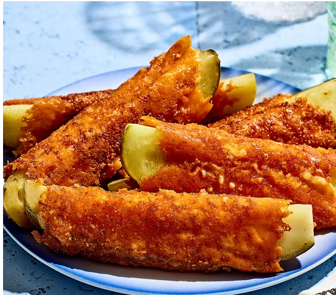

Frico Pickle Rollups

Description
These frico pickle rollups will be your new favorite snack. Crushed Cheetos, crispy melted cheese, and dill
spears come together for a craveable, crunchy, salty flavor bomb. Sharp Cheddar and vinegary pickles are a great
pairing, though you can use your choice of cheese. Customize this fun party appetizer with different chips as
well, and serve with ranch to dip.
Steps
- Gather all ingredients
- Heat a medium nonstick skillet over medium heat. Remove from heat and spray with cooking spray. Place over
medium heat; spoon 1 tablespoon crushed Cheetos into an area approximately the same size as a cheese slice.
- Place one cheese slice on top of crushed Cheetos, and cook until cheese is melted and lightly browned around
the edges, 2 to 3 minutes.
- Place a pickle spear in the middle of the cheese slice, then gently fold the edges of the cheese around the
pickle.
- Remove from the skillet and place on a wire rack or paper towel-lined plate.
- Repeat with remaining crushed Cheetos, cheese slices, and pickle spears, wiping out the skillet and spraying
with cooking spray between batches.
Ingredients
- cooking spray
- 4 tablespoons finely crushed crunchy Cheetos, divided
- 4 slices sharp Cheddar cheese, divided
- 4 dill pickle spears